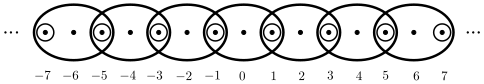

You may wonder why we can’t define a basis for a topology on a set \(X\) to be any collection of subsets whose union is \(X\text{.}\) Consider the example of \(X = \{a,b,c\}\) and \(S = \{\{a\}, \{c\}, \{a,b\}, \{b,c\}\}\text{.}\)
(a)
Determine the collection of all of the unions of elements of \(S\text{.}\)
(b)
Explain why the collection of unions of the elements of \(S\text{,}\) along with the empty set, is not a topology on \(X\text{.}\) What property of a basis is not satisfied?
2.
For each integer \(a\text{,}\) let \(a\Z = \{ka \mid k \in \Z\}\text{.}\) That is, \(a\Z\) is the set of all integer multiples of \(a\text{.}\)
(a)
Show that \(\{a\Z \mid a \in \Z\}\) is a basis for a topology \(\tau\) on \(\Z\text{.}\)
Is the set of positive integers an open set in the topological space \((\Z, \tau)\text{?}\) Explain.
(c)
Is the set of odd integers open in the topological space \((\Z, \tau)\text{?}\) Explain.
(d)
Is the set \(\{0\} \cup \{x \in Z \mid |x| \geq 5\}\) open in the topological space \((\Z, \tau)\text{?}\) Explain.
3.
This exercise is a generalization of Exercise 2. Let \(a\) and \(b\) be integers with \(a \neq 0\text{.}\) Let \(A_{a,b} = a\Z+b = \{ak + b \mid k \in \Z\}\text{.}\)
(a)
Show that \(\{A_{a,b} \mid a, b \in \Z, a \neq 0\}\) is a basis for a topology \(\tau\) on \(\Z\text{.}\)
Show that \(\B\) is a basis for a topology \(\tau\) on \(\R\text{.}\)
(b)
Every basis set is open in \((\R, \tau_E)\text{.}\) So we can ask it the topology \(\tau\) is different than the Euclidean topology generated by all open intervals in \(\R\text{.}\) Show that there are intervals of the form \((a,b)\) that are open in \((\R, d_E)\) that are not open sets in \(\tau\text{.}\)
5.
Let \(X = \{a,b,c\}\text{,}\) and let \(\tau_1 = \{\emptyset, \{a\}, \{a,b,c\}\}\) and \(\tau_2 = \{\emptyset, \{a\}, \{b\}, \{a,b\}, \{a,b,c\}\}\text{.}\) Both \(\tau_1\) and \(\tau_2\) are topologies in \(X\text{,}\) but every element in \(\tau_1\) is also an element in \(\tau_2\text{.}\) Then this happens we say that \(\tau_1\) is a weaker topology than \(\tau_2\text{.}\)Exercise 4 provides an example. More formally,
Definition12.13.
Let \(\tau_1\) and \(\tau_2\) be two topologies on a set \(X\text{.}\) If \(\tau_1 \subseteq \tau_2\text{,}\) then \(\tau_1\) is a coarser (or weaker) topology than \(\tau_2\text{.}\) We also say that \(\tau_2\) is a finer (or stronger) topology than \(\tau_1\text{.}\)
(a)
What is the weakest topology on any set?
(b)
What is the strongest topology on any set?
(c)
If a topology on \(X\) contains all single point sets, then every subset is open and our our topology is the discrete topology. Also, if a topology on \(X\) contains all two-point sets, then if \(x\text{,}\)\(y\text{,}\) and \(z\) are in \(X\) it follows that \(\{x,y\} \cap \{x,z\} = \{x\}\) is in the topology and we again have the.discrete topology. Consider the topology
The only sets not in \(\sigma\) are \(\{c\}\) and \(\{b,c\}\text{,}\) but adding either set to \(\sigma\) will produce the discrete topology. So \(\sigma\) is a strongest topology possible other than the discrete topology.
(d)
Let \(X = \{a,b,c\}\text{.}\) Are there any topologies \(\sigma\) on \(X\) such that \(\sigma\) is not the discrete topology but there are no stronger topologies on \(X\) other than the discrete topology? Explain.
(e)
Let \(X = \{a,b,c\}\text{.}\) Are there any topologies \(\gamma\) on \(X\) such that \(\gamma\) is not the indiscrete topology but there are no weaker topologies on \(X\) other than the indiscrete topology? Explain.
(f)
In general, there may be many different bases for a given topology, and two different bases can have the same cardinality. This is not the case for finite topological space. Let \(X\) be a finite set and let \(\tau\) be a topology on \(X\text{.}\) In this exercise we will show that there is a minimal basis for the topology \(\tau\text{.}\) That is, there is a basis \(\B_{\text{ min } }\) of \(\tau\) such that if \(\B\) is any other basis for \(\tau\text{,}\) then \(\B_{\text{ min } } \subseteq \B\text{.}\)
(i)
If \(x \in X\text{,}\) let \(U_x\) be the intersection of all open sets that contain \(x\text{.}\) Explain why \(U_x\) is an open set.
(ii)
Let \(\B_{\text{min}} = \{U_x \mid x \in X\}\text{.}\) Show that \(\B_{\text{min}}\) is a basis for \(\tau\text{.}\)
(iii)
Show that if \(\B\) is a basis for \(\tau\text{,}\) then \(\B_{\text{min}} \subseteq \B\text{.}\)
You may assume that \(\tau\) is a topology on \(X\text{.}\) Find the unique minimal basis for \(\tau\text{.}\)
(g)
Below is a list of \(9\) distinct topologies on \(X = \{a,b,c\}\text{.}\) Each topology lies in one or more sequences of topologies ordered by coarseness. For each topology \(\tau\text{,}\) list the longest sequence(s) of topologies that start \(\{\emptyset, X\} \subset \tau\text{,}\) ordered by coarseness.
For each \(n \in \Z^+\text{,}\) let \(O_n = \{n, n+1, n+2, \ldots\}\text{.}\) Let \(\tau = \{\emptyset, O_1, O_2, O_3, \ldots\}\text{.}\) Show that \((\Z^+, \tau)\) is a topological space.
8.
Let \(A, B\) be two subsets in a topological space \(X\text{.}\) What can you say about the relationships between \(\Int(A\cap B), \Int(A\cup B)\) and \(\Int(A)\cap \Int(B), \Int(A)\cup \Int(B)\text{,}\) respectively? Verify your results.
9.
Let \(X\) be a nonempty set and let \(p\) be an element in \(X\text{.}\) Let \(\tau_p\) be the collection of subsets of \(X\) consisting of \(\emptyset\text{,}\)\(X\text{,}\) and all of the subsets of \(X\) that contain \(p\text{.}\) Show that \(\tau_p\) is a topology on \(X\text{.}\) (This topology is called the particular point topology).
10.
Let \(X\) be a nonempty set and let \(p\) be an element in \(X\text{.}\) Let \(\tau_{\overline{p}}\) be the collection of subsets of \(X\) consisting of \(\emptyset\text{,}\)\(X\text{,}\) and all of the subsets of \(X\) that do not contain \(p\text{.}\) Show that \(\tau_{\overline{p}}\) is a topology on \(X\text{.}\) (This topology is called the excluded point topology.)
11.
One application of topology is in digital image displays, such as a computer screen. A digital image display is a rectangular array of pixels and can be modeled using a digital plane. In this exercise we consider a simplification of the digital plane — the digital line — which we consider as an infinite length one-dimensional collection of pixels. For each \(n \in \Z\) we define
\begin{equation*}
B(n) = \begin{cases}\{n\} \amp \text{ if \(n\) is odd } , \\ \{n-1,n,n+1\} \amp \text{ if \(n\) is even } . \end{cases}
\end{equation*}
The sets \(B(n)\) are illustrated in Figure 12.14.

Figure12.14.The digital line topology.
In this exercise we explore the collection \(\B = \{B(n)\}\text{.}\)
(a)
Show that the collection \(\B = \{B(n)\}\) is a basis for a topology on \(\Z\text{.}\) (The resulting topology is called the digital line topology \(\tau_{dl}\text{.}\) 4 The digital line models a one-dimensional array of pixels, where the even integers are the pixels and the odd integers are boundaries between the pixels. Information about the digital plane can be found in Chapter 20.)
(b)
Determine which of the following sets are open in the digital line topology:
(i)
\(\{0\}\)
(ii)
\(\{1\}\)
(iii)
\(\{0, 2\}\)
(iv)
\(\{1, 2, 3, 4, 5\}\)
(v)
\(\Z^+\)
(vi)
The set of odd integers.
12.
Let \(n\) be a positive integer and let \(\mathcal{P}_n\) be the collection of all polynomials in \(n\) real variables \(x_1\text{,}\)\(x_2\text{,}\)\(\ldots\text{,}\)\(x_n\text{.}\) As a specific example, the polynomial
is in \(\mathcal{P}_3\text{.}\) If \(f(x_1, x_2, \ldots, x_n)\) is in \(\mathcal{P}_n\text{,}\) let \(Z(f)\) be the set of zeros of the polynomial \(f\text{.}\) That is,
Note that \(Z(f)\) is a subset of \(\R^n\text{.}\) For example, if \(n=2\) and \(f(x_1,x_2) = x_1^2 - x_2\) then \(Z(f)\) is the set of ordered pairs in \(\R^2\) satisfying \(x_1^2-x_2 = 0\text{,}\) or \(x_2 = x_1^2\text{.}\) This is the graph of the parabola \(y=x^2\) in the plane.
(a)
Describe \(Z(f)\) in \(\R^2\) if \(f(x_1,x_2) = x_1^2 - 1\text{.}\)
(b)
If \(E\) is a set of polynomials in \(\mathcal{P}_n\text{,}\) we let \(Z(E) = \bigcap_{f \in E} Z(f)\) be the set of common zeros of all of the polynomials in \(E\text{.}\) Describe \(Z(E)\) if \(E = \{x_1+x_2+x_3, x_1-x_2-x_3, 3x_1+x_2+x_3\}\) in \(\R^3\text{.}\)
(c)
Let \(\mathcal{B}\) be the set of complements of the sets \(Z(f)\) for \(f \in \mathcal{P}_n\text{.}\) Show that \(\mathcal{B}\) is a basis for a topology on \(\R^n\text{.}\) The resulting topology is called the Zariski topology.
(d)
Is the set \(S = \{(x_1,x_2) \in \R^2 \mid x_1 = 0 \text{ or } x_2 = 0\}\) an open set in \(\R^2\) with the Zariski topology? Explain.
(e)
Explain why the Zariski topology when \(n=1\) is just the cofinite topology on \(\R\text{.}\) That is, show that every set that is open in the cofinite topology is open in the Zariski topology and that every set that is open in the Zaariski topology is open in the cofinite topology.
13.
For each of the following, answer true if the statement is always true. If the statement is only sometimes true or never true, answer false and provide a concrete example to illustrate that the statement is false. If a statement is true, explain why.
(a)
The set \(\{\emptyset, \{a,b\}, \{a,b,d,f\}, \{d,f\},X\}\) is a topology on the set \(X = \{a,b,c,d,e,f\}\text{.}\)
(b)
The set \(\Z\) is an open subset of \(\R\) using the finite complement topology \(\tau_{FC}\) on \(\R\text{.}\)
(c)
The set \(\mathcal{B} = \{\{b\},\{c\}, \{a,b\}, \{b,c,d\}\}\) is a basis for the topology \(\tau\) on the set \(X = \{a,b,c,d\}\text{,}\) where
If \(\tau_1\) and \(\tau_2\) are topologies on a space \(X\text{,}\) then \(\tau_1 \cup \tau_2\) is also a topology on \(X\text{.}\)
(g)
If \(\tau_1\) and \(\tau_2\) are topologies on a space \(X\text{,}\) then \(\tau_1 \cap \tau_2\) is also a topology on \(X\text{.}\)
This digital line topology has applications in digital processing — see Introduction to Topology: Pure and Applied by Colin Adams and Robert Franzosa , Pearson Education, Inc., 2008, Sections 1.4 and 11.3. The set \(\Z\) with the digital line topology is called the digital line.